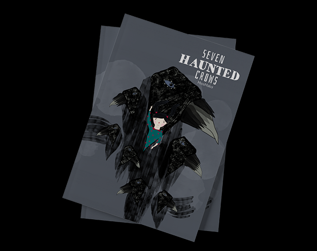

Mariela Katiuska Báez Ramirez is a Graduate of Multimedia Graphic Design with a Master’s degree in Fashion Marketing, based in Madrid, Spain. Her job title is Digital Art Director.
She is a professional illustrator and graphic designer who specializes in children’s books. In addition to illustration, she has a background in film and video production. She has published an illustrated album titled Siete Cuervos Encantado in Spanish and Siete Cuervos Encantado in English. Her illustrations appeared in the book Yamal is boring written by María Fernanda Martínez, a writer and psychologist.
Mariela Katiuska Baez Ramirez
Seven Haunted Crows

Highlight
Books
Seven Haunted Crows, Children Books | Amazon 2017
Siete Cuervos Encantados, Álbum Ilustrado |
Amazon 2015.
Yamal se aburre, María Fernanda Martínez de Jiménez y Maka Bara, Álbum Ilustrado | Amazon 2018.
Awards
She won the Iron prize in A’ Design Award Competition in Graphics and Visual Communication Design Category, 2019-2020 with Seven Haunted Crows Book.
Interview: A’ Design Awards
Interview: Designers.org
News: Creativeboom.com
Photography
She has participated in FOTONOVIEMBRE 2011 with Re: Interpretaciones and in 2013 with Altivolantis with Colectivo Shutters Tenerife.
She won the 3rd Photography Prize at the 1st FÊTE DE LA MUSIQUE Photography Contest, San Cristóbal de La Laguna, Tenerife – 2013.
Also, she has collaborated on short films in the direction of photography, camera girl and editing.